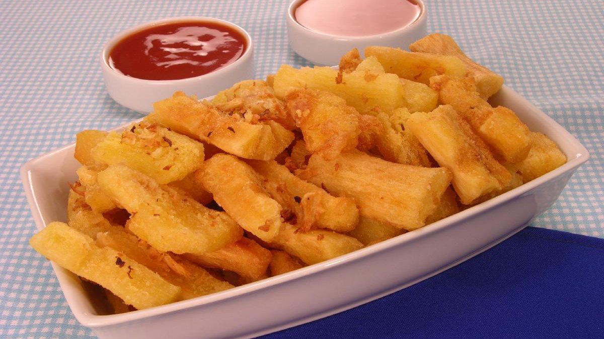

Macaxeira

•
A macaxeira é um tubérculo originário da América Latina, amplamente consumido em várias partes do mundo.
É uma raiz comestível de cor branca, textura amilácea e sabor suave.
A macaxeira pode ser preparada de várias formas, incluindo cozida, frita, assada ou como ingrediente em diversas receitas culinárias.
Informação Nutricional
(valores aproximados por porção de 250g):
Calorias: Varia entre 200 a 250 kcal, dependendo do método de preparo.
Carboidratos: Aproximadamente 50g
Proteínas: Aproximadamente 2g
Gorduras: Aproximadamente 0g
Fibras: Aproximadamente 4g
Vitaminas e Minerais: A macaxeira é uma boa fonte de carboidratos complexos, além de conter algumas vitaminas do complexo B e minerais como potássio e magnésio.
R$25,00 | 250g
« Voltar ao menu